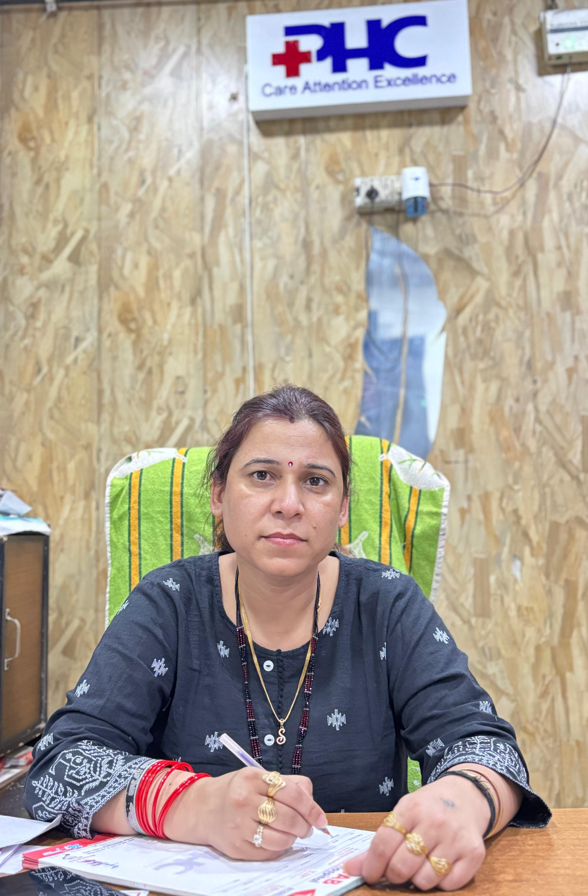

Mrs. Shilpa Kawatra, MD, is the Medical Director and visionary behind Punjab Hospital & Trauma Centre, Chhutmalpur, Saharanpur. With her extensive medical knowledge and unwavering commitment to patient care, she has helped shape the hospital into a modern, multi-specialty healthcare institution focused on ethical and compassionate treatment.
Under her leadership, the hospital has adopted NABH-compliant infrastructure, including fully equipped Modular Operation Theatres, 24×7 Emergency & ICU services, NICU for neonatal care, and a range of specialty departments. She ensures the availability of skilled medical professionals, up-to-date diagnostic services, and an atmosphere of trust and empathy for all patients.
Her role extends beyond administration — she personally oversees clinical protocols, patient welfare systems, and continuous quality improvements, with a focus on affordability and dignity in treatment. The hospital operates under her vision of offering “Comprehensive Care Under One Roof” to all sections of society.
Mrs. Kawatra’s steadfast dedication, years of experience, and compassionate approach make her a beacon of leadership in the regional healthcare community.